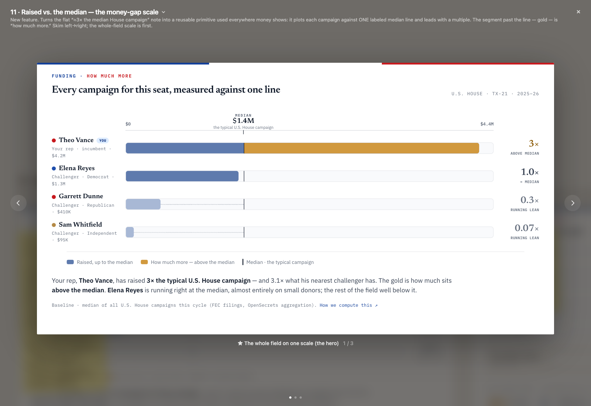
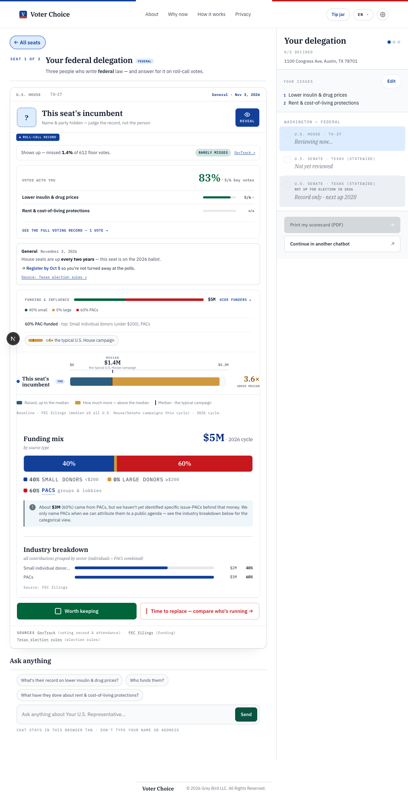
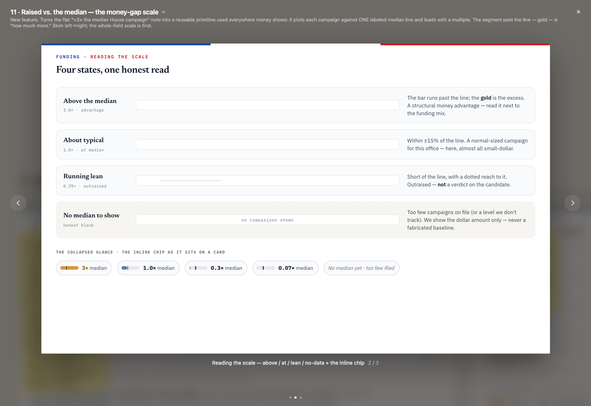
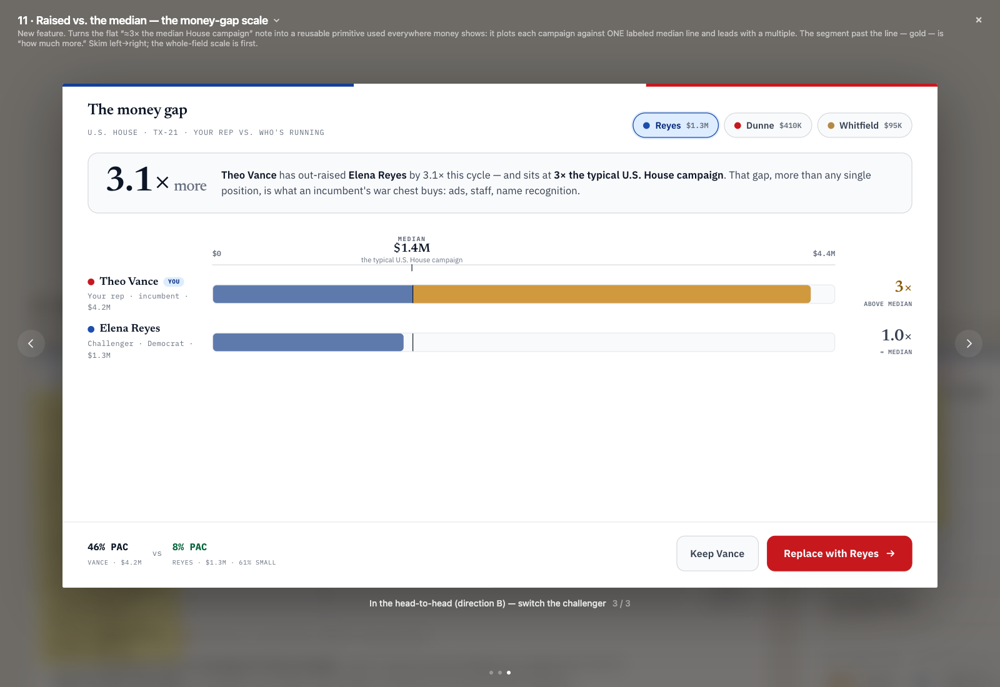

11a-fieldmoneygap
Money-gap — subject vs the median (field rows moved to the duel)
unchanged since base
automated
REWRITTEN 2026-07-12 (Round-4 problem #10): the incumbent card's scale is subject-vs-median ONLY — the `field` challenger rows the 2026-07-11 ruling wired here were removed again by Muxin's Round-4 review (challenger money bars don't belong on the incumbent's own card); the whole-field comparison relocates to the head-to-head duel ('Everyone running for this seat', feat/headtohead-money-clarity). The canvas artboard (refFile) still shows the whole-field composition; subject-only renders as a strict subset of it, inside the coarse visual threshold — the marker probe in parity-gate.ts is the binding check for the removal. mockDelegationWithChallengers stays in this capture ON PURPOSE: the mock supplies funded challengers so a regressed tree that re-wires `field` would genuinely render the rows the probe asserts are gone.


11b-scalestates
Money-gap — reading the scale, 4 states + honest blank
not automatable
NOT AUTOMATABLE: the canvas artboard is a style-guide-style enumeration of 4 states + the collapsed chip side by side — there is no single app screen that shows all of them at once (the real app renders whichever ONE band the data produces per card). A prior 'proxy' capture reused 02b/11a's single-band funding-expanded panel and pixel-diffed it against the real 4-state enumeration canvas ref — a structurally different screen — which silently false-passed (STOP-SHIP 2026-07-09 finding). Genuinely not gradable as a single screenshot.

not automatable — see note
11c-moneygaph2h
Money-gap — in the head-to-head
unchanged since base
proxy
The canvas's money-ratio + shared-scale component for this screen was deleted as dead code — confirmed by grep: no export with that shape exists anywhere in MoneyGap.tsx anymore. The duel screen's actual money treatment is a simpler PAC-percentage footnote (.cmp-fund), not that ratio/scale component. Proxy: same HeadToHead screenshot as 05b, so the gap is visible rather than hidden.
